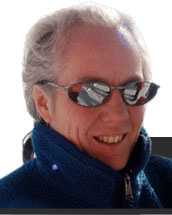
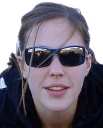
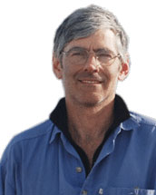
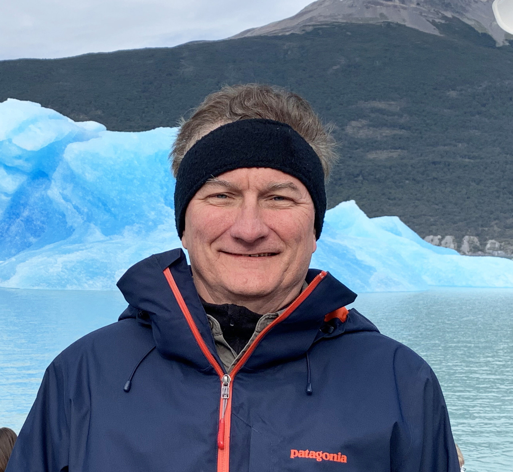
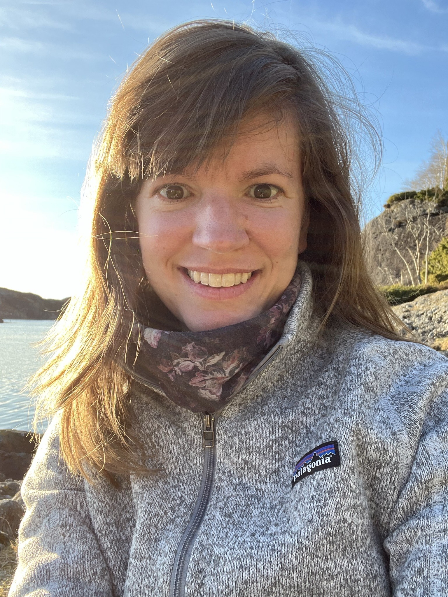
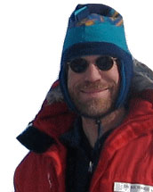
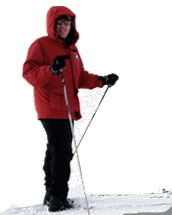
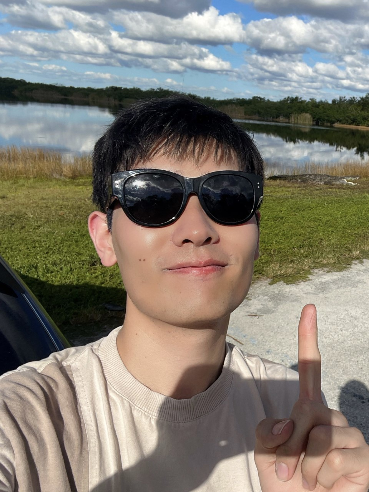

Meet the Researchers

Terry Wilson
Principal Investigator The Ohio State University, USA
Focus of Study I investigate the structural architecture of the Earth, how continents rift, and the interaction of the solid Earth and ice sheets in Antarctica. Why ANET-POLENET? Geophysical measurements on this unprecedented scale across Antarctica will lead to phenomenal discoveries - I've spent 10 years working to achieve it! Favorite Vista The Royal Society Range, Transantarctic Mountains, from Ross Island, Antarctica.
Stephanie Sherman
Senior Research Associate The Ohio State University, USA
Focus of Study Using GPS and other remote sensing techniques to study crustal deformation in Antarctica. Why ANET-POLENET? My research utilizes data that has been and will be collected through the ANET-POLENET project. Favorite Pastimes Running, ceramics, hiking, swimming, and playing outside with my husband and two daughters.
Eric Kendrick
Senior Research Associate The Ohio State University, USA
Focus of Study I use GPS to study crustal motion in Greenland, Antarctica, South America, and the islands of the South Pacific. Why ANET-POLENET? POLENET is a natural extension of my previous work on the West Antarctic GPS Network (WAGN) project. Favorite Movie Toss-up between The Sound of Music and Psycho Favorite Pastimes Travel, cycling, kayaking
Doug Wiens
Professor Washington University in St Louis
Focus of Study I am a seismologist studying Antarctica to better understand the geological history of the continent, and how the ice sheet interacts with the solid earth. Why ANET-POLENET? Before POLENET, Antarctica was unexplored from a seismological standpoint. The instruments deployed by Polenet have revealed an intriguing and complicated structure beneath the ice, that continues to influence the evolution of the ice sheet today. Least Favorite Vista South Pole Station, all flat and white.
Natalya Gomez
Associate Professor McGill University
Focus of Study My group and I work at the intersection between solid Earth geophysics and climate science to monitor and simulate the interactions between ice sheets, sea level and the solid Earth, and the response of these systems to past, present and future climate changes. We aim to improve projections of these systems and the associated Earth system and human impacts in a warming world. Why ANET-POLENET? Seismic and geodetic observations are key to understanding the complex geodynamics of the solid Earth in Antarctica and its influence on the ice sheet. The advances in process-understanding and improvements to future projections that come from the monitoring efforts and collaborative research projects within POLENET are urgently important in the face of future climate change and global sea level rise. I also love working with interdisciplinary teams and bringing perspectives together to solve problems.
Rick Aster
President, Seismological Society of America Professor of Geophysics Colorado State University
Focus of Study I am a seismologist who is broadly interested in both seismic sources (including novel ones from Antarctica, such as drifting icebergs) and applying seismic methods to image the deep interior of the Earth. Why Polenet? Because of my long-standing interests in continental rift zones (e.g., the Rio Grande Rift) and in seismic techniques, such as receiver functions, that are highly applicable to exploring the lithosphere and mantle scale structure of West Antarctica. I also love working in groups with diverse colleagues from other fields, such as geodesy and glaciology. Favorite Guitarist Jeff Beck!
Andy Nyblade
President, Seismological Society of America Professor of Geosciences Penn State University
Focus of Study I am interested in understanding deep processes inside the Earth that have formed and continue to modify the Antarctic continent. Why Polenet? Seismic images will let us "geophysically" peel off the West Antarctic ice sheet, revealing the structure of the continent for the first time. Favorite Location Mt. Kilimanjaro (about 20 years ago before the glaciers started to rapidly melt)
Hongzhi Yao
Graduate Student The Ohio State University, USA
Focus of Study I study the surface deformation from the load change, especially one of the largest contributor, the change of atmospheric surface pressure. And to correct the GPS time series with the results. Why ANET-POLENET? As a PhD student, I value the chance to work with POLENET. And coincidentally, one of my favorite book in childhood is called《去南极》 Favorite Things Travel to anywhere I haven’t been to (on the Earth).